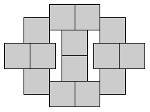
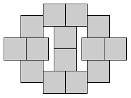
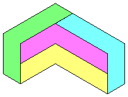
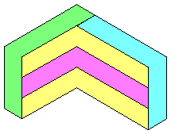
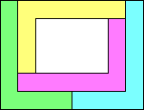
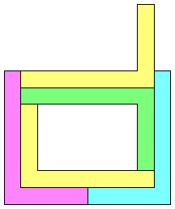
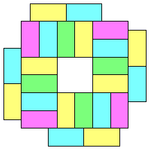
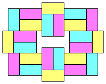

|  |  |
|  | |
Which graphs can be adjacency graphs? Can you find 4 congruent polygons that have K4 (the complete graph on 4 vertices) as an adjacency graph? How about K5 minus an edge? What are the simplest polygons (in terms of number of sides, or aspect ratio, or lack of small angles) that can realize a given adjacency graph? Can every tree be an adjacency graph?
For a real challenge, notice that the graph above is regular, meaning each square touches exactly three other squares. What are the smallest regular adjacency graphs? And what are the simplest polygons that create them?
|  |  |
Here are my polyomino solutions to these problems.
|  |  |
The first figure above was also found by John Hoffman who thinks that it cannot be done with a convex shape. Sasha Ravsky agrees. John Hoffman also asks whether every planar graph is realizable as an adjacency graph of a set of congruent polygons? He guesses no, but I guess yes. Can anyone find a counterexample?
Joseph DeVincentis found that a rectangle that can have an adjacency graph that is 4-regular. His arrangement is on the left. My arrangement is on the right.
|  |  |
If you can extend any of these results, please e-mail me. Click here to go back to Math Magic. Last updated 12/21/02.